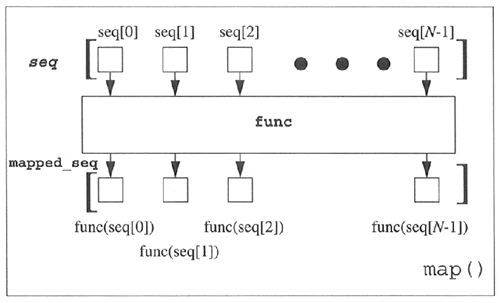
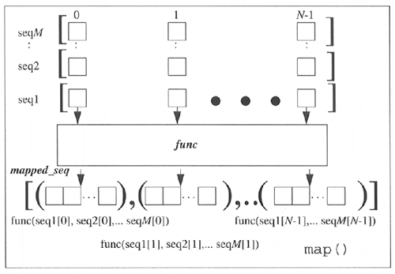

| < BACK | Make Note | Bookmark | CONTINUE > |
map()
The map() built-in function is similar to filter() in that it can process a sequence through a function. However, unlike filter(), map() "maps" the function call to each sequence item and returns a list consisting of all the return values.
In its simplest form, map() takes a function and sequence, applies the function to each item of the sequence, and creates a return value list that is comprised of each application of the function. So if your mapping function is to add 2 to each number that comes in and you feed that function to map() along with a list of numbers, the resulting list returned is the same set of numbers as the original, but with 2 added to each number. If we were to code how this simple form of map() works in Python, it might look something like the code below and is illustrated in Figure11-2
Figure 11-2. How the map() Built-in Function Works

def map(func, seq):
mapped_seq = []
for eachItem in
seq:
mapped_seq.append(apply(func, eachItem))
return mapped_seq
We can whip up a few quick lambda functions to show you how map() works on real data:
>>> map((lambda x: x+2), [0, 1, 2, 3, 4, 5]) [2, 3, 4, 5, 6, 7] >>> >>> map(lambda x: x**2, [0, 1, 2, 3, 4, 5]) [0, 1, 4, 9, 16, 25] >>> >>> map((lambda x: x**2), range(6)) [0, 1, 4, 9, 16, 25]
The more general form of map() can take more than a single sequence as its input. If this is the case, then map() will iterate through each sequence in parallel. On the first invocation, it will bundle the first element of each sequence into a tuple, apply the func function to it, and return the result as a tuple into the mapped_seq mapped sequence that is finally returned as a whole when map() has completed execution.
Figure11-2 illustrated how map() works with a single sequence. If we used map() with M sequences of N objects each, our previous diagram would be converted to something like the diagram presented in Figure11-3
Figure 11-3. How the map() Built-in Function Works with > 1 Sequence
For example, let us consider the following call to map():
>>> map(lambda x, y: x + y, [1,3,5], [2,4,6]) [3, 7, 11]
In the above example, the number of sequences, M, is two. The lists [1, 3, 5] and [2, 4, 6] are our sequences. And each of these sequences has cardinality or size three, or N. The result then consists of the following:
Let:
f(x, y) \xba x + y, seq0 = [1, 3, 5], and seq1 = [2, 4, 6]
Then:
map(f, seq0, seq1)
= [ f(seq0[0], seq1[0]), f(seq0[1], seq1[1]), \
f(seq0[2], seq1[2])
= [ 1 + 2, 3 + 4, 5 + 6 ]
= [3, 7, 11]
Also, map() can also take None as the function argument. If None is used instead of a real function object, map() will take that clue to default to the identity function, meaning that the resulting map will be of the same one as the sequence you passed in. If more than one sequence is passed in, then the resulting list will consist of a tuple with one element from each sequence. Here are a few more examples of using map() with multiple sequences, including one with None passed in as the map() function:
>>> map(lambda x, y: (x+y, x-y), [1,3,5], [2,4,6]) [(3, -1), (7, -1), (11, -1)] >>> map(lambda x, y: (x+y, x*y), [1,3,5], [2,4,6]) [(3, 2), (7, 12), (11, 30)] >>> map(None, [1,3,5], [2,4,6]) [(1, 2), (3, 4), (5, 6)]
This idiom is so commonly used that a new built-in function, Zip(), which does the same thing (given sequences of identical size), was added in Python 2.0.
Now these "real-time" examples are nice, but we should also show you some code that you can use in real life. In the next example, we created a text file called map.txt, which has a few lines of text surrounded by whitespace. We will use the script strupper.py, given in Example 11.6, to strip all the leading and trailing whitespace by passing each line to string.strip() and converting all text to uppercase using string.upper(). The output of this script will show you the file contents before our manipulation and what the lines look like after we are finished:
Example 11.6. Text File Processing (strupper.py)
strupper.pytakes an existing text file, strips all leading and trailing whitespace, and converts all the text to uppercase.
<$nopage>
001 1 #!/usr/bin/env python
002 2
003 3 from string import strip, upper
004 4
005 5 f = open('map.txt')
006 6 lines = f.readlines()
007 7 f.close()
008 8
009 9 print 'BEFORE:\n'
010 10 for eachLine in lines:
011 11 print '[%s]' % eachLine[:-1]
012 12
013 13 print '\nAFTER:\n'
014 14 for eachLine in map(upper, \
015 15 map(strip, lines)):
016 16 print '[%s]' % eachLine
017 <$nopage>
% strupper.py BEFORE: [ Apply function to every item of list and return a ] [list of the results. If additional list arguments are ] [passed, function must take that many arguments and is ] [applied to the items of all lists in parallel. ] AFTER: [APPLY FUNCTION TO EVERY ITEM OF LIST AND RETURN A] [LIST OF THE RESULTS. IF ADDITIONAL LIST ARGUMENTS ARE] [PASSED, FUNCTION MUST TAKE THAT MANY ARGUMENTS AND IS] [APPLIED TO THE ITEMS OF ALL LISTS IN PARALLEL.]
Notice that only leading and trailing whitespace is removed. Extra whitespace in the middle of a string such as the last sentence is left as-is.
Our final example in this chapter deals with processing numbers. In particular, assume we have a text file full of numeric dollar amounts. Let us say that these numbers are to go on your income tax form, but you want to round them all to the nearest dollar amount. Here are the contents of our test text file round.txt:
98.76 90.69 51.36 50.89 28.34 49.64 6.87 36.95 59.25 55.96
We now present in Example 11.7 the code to rounder.py, a script which strips the trailing NEWLINE character and rounds all the values to the nearest dollar (converting the data from strings to floats first, of course).
Example 11.7. Text File Number Crunching (rounder.py)
rounder.py takes a set of floating point values stored in a text file, and rounds them to the closest whole number. The exercise is to simulate taking numbers destined for income taxes and rounding them to the nearest dollar.
<$nopage>
001 1 #!/usr/bin/env python
002 2
003 3 f = open('round.txt')
004 4 values = map(float, f.readlines())
005 5 f.close()
006 6
007 7 print 'original\trounded'
008 8 for eachVal in map(None, values, \
009 9 map(round, values)):
010 10 print '%6.02f\t\t%6.02f' % eachVal
011 <$nopage>
The first thing that this script does is to call map(), sending each line to the float() built-in function, thereby converting the string values to numeric ones while ignoring any leading or trailing whitespace.
Finally, the main part of the code will now present the original values as well as the rounded ones. This is accomplished by sending the values to the round() built-in function via map(). At the same time, we call map() with a None function—implying identity which does nothing but merge its sequence arguments into a single list consisting of tuples, each containing one value from each sequence. (Starting in 2.0, we could have also used the zip() function, as indicated earlier in this section.) In our case, this constitutes an original value and a rounded value. The for loop thus iterates over this list of tuples, each tuple representing the original and rounded values, which are then displayed to the user in a nice and readable format.
Executing the rounder.py script, we get the following output:
% rounder.py original rounded 98.76 99.00 90.69 91.00 51.36 51.00 50.89 51.00 28.34 28.00 49.64 50.00 6.87 7.00 36.95 37.00 59.25 59.00 55.96 56.00
| Last updated on 9/14/2001 Core Python Programming, © 2002 Prentice Hall PTR |
| < BACK | Make Note | Bookmark | CONTINUE > |